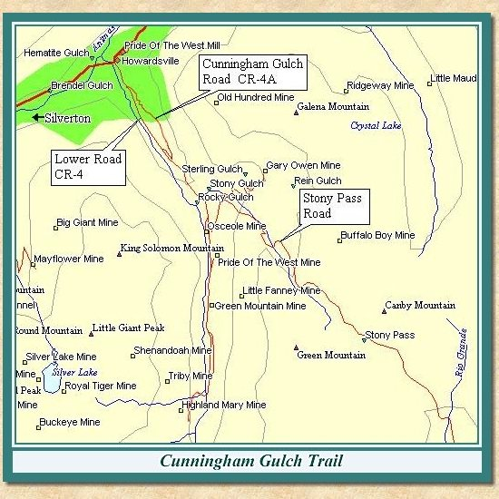
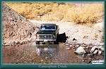
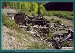
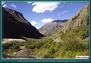
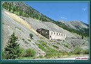
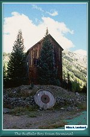
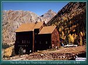

Contributed by Jerry Clark
Photos by Miles A. Lumbard & Mark Evans

| Cunningham Gulch was the original entry into the Silverton region by way of Stony Pass and Cunningham Pass. Prospectors and supply wagons moved over this route from Del Norte into the Animas River valley and Baker's Park. The gulch is named for W. H. Cunningham, a member of Charles Baker's original party that entered the area in 1860. This narrative will deal with the trip up the head of the gulch. We'll leave the Stony Pass route for another page some day. |
| The Cunningham Gulch road starts in Howardsville. Turn east on County Road 4 and follow the signs to the Old Hundred Mine tour by bearing left on County Road 4-A at its junction with County Road 4. If you have the time, the mine tour is well worth the price of admission. It takes you through the lower workings of the Old Hundred Mine and gives you a good idea of what kind of men the miners had to be. |
| Continuing past the Old Hundred you will see the Buffalo Boy tram house on the right, now restored and used as a private residence. Remains of the tram can be seen looking to the left up Canby Mountain |
| The Stony Pass Road joins the Cunningham Gulch road from the left shortly past the Buffalo Boy tram house. We'll leave the Stony Pass route for another day on its own page. We have to have some reason to keep coming back, don't we? |
| The Pride of the West Mine can be seen on the left after passing the Stony Pass cutoff and the Osceola mine dump. Past the Pride of the West the dumps on the left are the remains Green Mountain Mine. This area is highly prone to snow slides in the winter. Continuing past the public restroom on the left, ford Cunningham Creek at the site of the Highland Mary mill |
| The Highland Mary Mill was built in the 1890's. It was rebuilt at least twice and continued operations until the early 1950's. The mill was destroyed by a snow slide and fire. The tram from the upper level of the Highland Mary Mine can be seen above the site of the mill. The road continues past a foot trail to Cunningham Pass, and forks shortly before ending. The left hand fork goes up to the Highland Mary Lakes trail head while the right fork leads to Mountaineer Creek where the road becomes a hiking trail into Spencer Basin. |
| Returning down the main road to the intersection with the Stony Pass Road, bear left on CR 4. This alternate will pass the Buffalo Boy tramhouse, the ruins of the Green Mountain Mill and the lower level of the Old Hundred Mill ruins before rejoining CR 110 in Howardsville |
|
 |
About to cross Cunningham Creek above Silverton
- 9/89
(96k) |

|
 |
Remains of the Green Mountain Mill in Cunningham Gulch
(137k) |

|
 |
View down Cunningham Gulch towards the Animas Canyon
(99k) |

|
 |
Remains of the Old Hundred mill in Cunningham Gulch
(125k) |

|
 |
The Buffalo Boy tramway terminal
(121k) |

|
 |
The Buffalo Boy tramway terminal
(105k) |


|
The remains of the
Highland Mary Mine (132k) |

|
The Narrow Gauge Circle is written, maintained,and hosted by: Mark L. Evans Send Comments to:Mark L. Evans All original materials, text, and digital images Copyright © 1996-2017 Mark L. Evans. All rights reserved. Imitation is said to be the "sincerest" form of flattery.....Please don't flatter us without permission. |